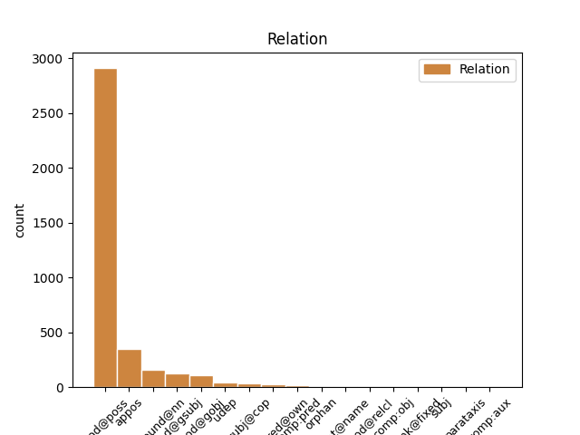
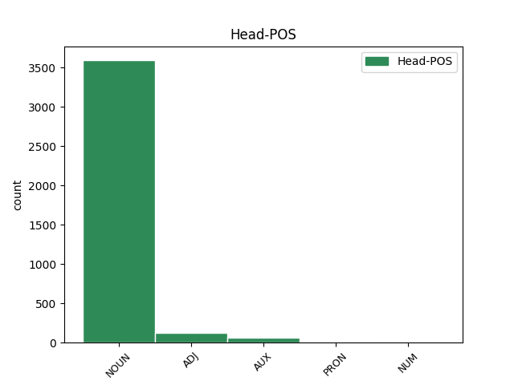
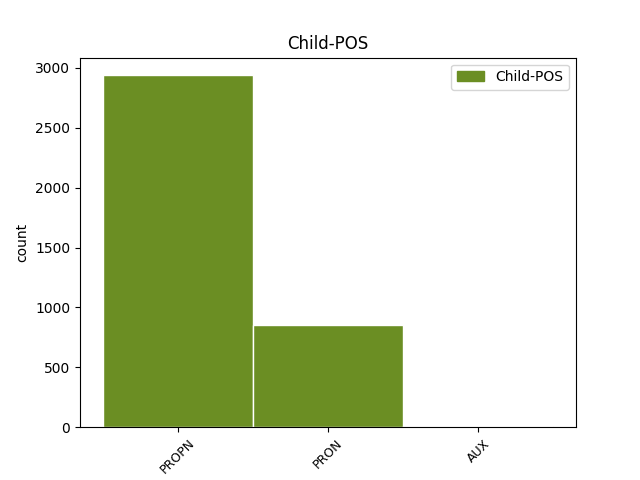

Distribution of features within this leaf



Agreement Rules sorted by frequency.
- When the dependent token is the modifer(mod@poss) of the head token, and the head token is NOUN and the dependent token is PROPN.
1 Suomen Suomi PROPN N Case=Gen|Number=Sing 2 mod@poss _ _
2 väliluvun väli#luku NOUN N Case=Gen|Number=Sing 0 _ _ _
3 kasvu _ _ _ _ 0 _ _ _
4 oli _ _ _ _ 0 _ _ _
5 suurinta _ _ _ _ 0 _ _ _
6 15 _ _ _ _ 0 _ _ _
7 vuoteen _ _ _ _ 0 _ _ _
8 ja _ _ _ _ 0 _ _ _
9 vuoden _ _ _ _ 0 _ _ _
10 lopulla _ _ _ _ 0 _ _ _
11 väkiluku _ _ _ _ 0 _ _ _
12 yltää _ _ _ _ 0 _ _ _
13 5,5 _ _ _ _ 0 _ _ _
14 miljoonaan _ _ _ _ 0 _ _ _
15 , _ _ _ _ 0 _ _ _
16 arvioi _ _ _ _ 0 _ _ _
17 Tilastokeskus _ _ _ _ 0 _ _ _
18 . _ _ _ _ 0 _ _ _
1 Mediamaksuehdotusta _ _ _ _ 0 _ _ _
2 on _ _ _ _ 0 _ _ _
3 arvosteltu _ _ _ _ 0 _ _ _
4 sen se PRON Pron Case=Gen|Number=Sing|PronType=Dem 5 mod@poss _ _
5 epäoikeudenmukaisuuden epä#oikeuden#mukaisuus NOUN N Case=Gen|Derivation=Inen,Vs|Number=Sing 0 _ _ _
6 vuoksi _ _ _ _ 0 _ _ _
7 . _ _ _ _ 0 _ _ _
1 Kolmas _ _ _ _ 0 _ _ _
2 kaapeli kaapeli NOUN N Case=Nom|Number=Sing 0 _ _ _
3 , _ _ _ _ 0 _ _ _
4 FLAG FLAG PROPN N Case=Nom|Number=Sing 2 appos _ _
5 Falcon _ _ _ _ 0 _ _ _
6 , _ _ _ _ 0 _ _ _
7 katkesi _ _ _ _ 0 _ _ _
8 perjantaina _ _ _ _ 0 _ _ _
9 56 _ _ _ _ 0 _ _ _
10 kilometrin _ _ _ _ 0 _ _ _
11 päästä _ _ _ _ 0 _ _ _
12 Dubaista _ _ _ _ 0 _ _ _
13 ja _ _ _ _ 0 _ _ _
14 FLAG:in _ _ _ _ 0 _ _ _
15 virallinen _ _ _ _ 0 _ _ _
16 selityksen _ _ _ _ 0 _ _ _
17 mukaan _ _ _ _ 0 _ _ _
18 sen _ _ _ _ 0 _ _ _
19 rikkoi _ _ _ _ 0 _ _ _
20 todennäköisesti _ _ _ _ 0 _ _ _
21 laivan _ _ _ _ 0 _ _ _
22 ankkuri _ _ _ _ 0 _ _ _
23 . _ _ _ _ 0 _ _ _
1 The _ _ _ _ 0 _ _ _
2 Pirate _ _ _ _ 0 _ _ _
3 Bay _ _ _ _ 0 _ _ _
4 on _ _ _ _ 0 _ _ _
5 ruotsalainen _ _ _ _ 0 _ _ _
6 bittorrent bittorrent PROPN N Case=Nom|Number=Sing 7 compound@nn _ _
7 -seurantapalvelin seuranta#palvelin NOUN N Case=Nom|Number=Sing 0 _ _ _
8 jolla _ _ _ _ 0 _ _ _
9 haetaan _ _ _ _ 0 _ _ _
10 pääosin _ _ _ _ 0 _ _ _
11 tekijänoikeuksia _ _ _ _ 0 _ _ _
12 rikkovaa _ _ _ _ 0 _ _ _
13 sisältöä _ _ _ _ 0 _ _ _
14 . _ _ _ _ 0 _ _ _
1 Kolmas _ _ _ _ 0 _ _ _
2 kaapeli _ _ _ _ 0 _ _ _
3 , _ _ _ _ 0 _ _ _
4 FLAG _ _ _ _ 0 _ _ _
5 Falcon _ _ _ _ 0 _ _ _
6 , _ _ _ _ 0 _ _ _
7 katkesi _ _ _ _ 0 _ _ _
8 perjantaina _ _ _ _ 0 _ _ _
9 56 _ _ _ _ 0 _ _ _
10 kilometrin _ _ _ _ 0 _ _ _
11 päästä _ _ _ _ 0 _ _ _
12 Dubaista _ _ _ _ 0 _ _ _
13 ja _ _ _ _ 0 _ _ _
14 FLAG:in FLAG PROPN N Case=Gen|Number=Sing 16 mod@gsubj _ _
15 virallinen _ _ _ _ 0 _ _ _
16 selityksen selitys NOUN N Case=Gen|Number=Sing 0 _ _ _
17 mukaan _ _ _ _ 0 _ _ _
18 sen _ _ _ _ 0 _ _ _
19 rikkoi _ _ _ _ 0 _ _ _
20 todennäköisesti _ _ _ _ 0 _ _ _
21 laivan _ _ _ _ 0 _ _ _
22 ankkuri _ _ _ _ 0 _ _ _
23 . _ _ _ _ 0 _ _ _
1 Kiinassa _ _ _ _ 0 _ _ _
2 ihmiset _ _ _ _ 0 _ _ _
3 eivät _ _ _ _ 0 _ _ _
4 pysty _ _ _ _ 0 _ _ _
5 vaikuttamaan _ _ _ _ 0 _ _ _
6 omaan _ _ _ _ 0 _ _ _
7 ympäristöönsä ympäristö NOUN N Case=Ill|Number=Sing|Person[psor]=3 0 _ _ _
8 , _ _ _ _ 0 _ _ _
9 kuten _ _ _ _ 0 _ _ _
10 siihen se PRON Pron Case=Ill|Number=Sing|PronType=Dem 7 appos _ SpaceAfter=No
11 , _ _ _ _ 0 _ _ _
12 mitä _ _ _ _ 0 _ _ _
13 rakentamisen _ _ _ _ 0 _ _ _
14 tieltä _ _ _ _ 0 _ _ _
15 puretaan _ _ _ _ 0 _ _ _
16 ja _ _ _ _ 0 _ _ _
17 mitä _ _ _ _ 0 _ _ _
18 ei _ _ _ _ 0 _ _ _
19 . _ _ _ _ 0 _ _ _
1 Falcon-kaapelin _ _ _ _ 0 _ _ _
2 katkeaminen _ _ _ _ 0 _ _ _
3 katkaisi _ _ _ _ 0 _ _ _
4 Arabiemiirikuntien Arabiemiirikunnat PROPN N Case=Gen|Number=Plur 7 mod@poss _ _
5 ja _ _ _ _ 0 _ _ _
6 Omanin _ _ _ _ 0 _ _ _
7 välisen välinen ADJ A Case=Gen|Degree=Pos|Derivation=Inen|Number=Sing 0 _ _ _
8 yhteyden _ _ _ _ 0 _ _ _
9 , _ _ _ _ 0 _ _ _
10 joka _ _ _ _ 0 _ _ _
11 ainakin _ _ _ _ 0 _ _ _
12 joidenkin _ _ _ _ 0 _ _ _
13 raporttien _ _ _ _ 0 _ _ _
14 mukaan _ _ _ _ 0 _ _ _
15 olisi _ _ _ _ 0 _ _ _
16 haitannut _ _ _ _ 0 _ _ _
17 merkittävästi _ _ _ _ 0 _ _ _
18 tai _ _ _ _ 0 _ _ _
19 katkaissut _ _ _ _ 0 _ _ _
20 samalla _ _ _ _ 0 _ _ _
21 myös _ _ _ _ 0 _ _ _
22 Iranin _ _ _ _ 0 _ _ _
23 verkkoliikenteen _ _ _ _ 0 _ _ _
24 . _ _ _ _ 0 _ _ _
1 Tämä _ _ _ _ 0 _ _ _
2 on _ _ _ _ 0 _ _ _
3 merkittyt _ _ _ _ 0 _ _ _
4 mm. _ _ _ _ 0 _ _ _
5 Toyotan Toyota PROPN N Case=Gen|Number=Sing 6 mod@gobj _ _
6 myynnin myynti NOUN N Case=Gen|Number=Sing 0 _ _ _
7 laskua _ _ _ _ 0 _ _ _
8 jota _ _ _ _ 0 _ _ _
9 on _ _ _ _ 0 _ _ _
10 tapahtunut _ _ _ _ 0 _ _ _
11 vuonna _ _ _ _ 0 _ _ _
12 6,5 _ _ _ _ 0 _ _ _
13 % _ _ _ _ 0 _ _ _
14 verrattuna _ _ _ _ 0 _ _ _
15 edelliseen _ _ _ _ 0 _ _ _
16 vuoteen _ _ _ _ 0 _ _ _
17 . _ _ _ _ 0 _ _ _
1 Sivuston _ _ _ _ 0 _ _ _
2 vastustajat _ _ _ _ 0 _ _ _
3 puolestaan _ _ _ _ 0 _ _ _
4 esittävät _ _ _ _ 0 _ _ _
5 sen se PRON Pron Case=Gen|Number=Sing|PronType=Dem 6 subj@cop _ _
6 olevan olla AUX V Case=Gen|Degree=Pos|Number=Sing|PartForm=Pres|VerbForm=Part|Voice=Act 0 _ _ _
7 rikollinen _ _ _ _ 0 _ _ _
8 salaliitto _ _ _ _ 0 _ _ _
9 tekijänoikeuksia _ _ _ _ 0 _ _ _
10 vastaan _ _ _ _ 0 _ _ _
11 . _ _ _ _ 0 _ _ _
1 JJ _ _ _ _ 0 _ _ _
2 Lehto _ _ _ _ 0 _ _ _
3 ajoi _ _ _ _ 0 _ _ _
4 tallin _ _ _ _ 0 _ _ _
5 autoilla _ _ _ _ 0 _ _ _
6 ensimmäiset _ _ _ _ 0 _ _ _
7 F1-kisansa _ _ _ _ 0 _ _ _
8 1989 _ _ _ _ 0 _ _ _
9 ja _ _ _ _ 0 _ _ _
10 jatkoi _ _ _ _ 0 _ _ _
11 tallissa _ _ _ _ 0 _ _ _
12 sen se PRON Pron Case=Gen|Number=Sing|PronType=Dem 13 mod@gsubj _ _
13 toiminnan toiminta NOUN N Case=Gen|Number=Sing 0 _ _ _
14 loppumiseen _ _ _ _ 0 _ _ _
15 saakka _ _ _ _ 0 _ _ _
16 . _ _ _ _ 0 _ _ _
1 Artikkeli _ _ _ _ 0 _ _ _
2 oli _ _ _ _ 0 _ _ _
3 ehkä _ _ _ _ 0 _ _ _
4 kaikkien _ _ _ _ 0 _ _ _
5 aikojen _ _ _ _ 0 _ _ _
6 vaikuttavin _ _ _ _ 0 _ _ _
7 avausta _ _ _ _ 0 _ _ _
8 käsittelevä _ _ _ _ 0 _ _ _
9 teksti _ _ _ _ 0 _ _ _
10 , _ _ _ _ 0 _ _ _
11 ja _ _ _ _ 0 _ _ _
12 sen se PRON Pron Case=Gen|Number=Sing|PronType=Dem 13 mod@gobj _ _
13 julkaisun julkaisu NOUN N Case=Gen|Derivation=U|Number=Sing 0 _ _ _
14 jälkeen _ _ _ _ 0 _ _ _
15 kuningasgambiittia _ _ _ _ 0 _ _ _
16 on _ _ _ _ 0 _ _ _
17 pelattu _ _ _ _ 0 _ _ _
18 mestaritasolla _ _ _ _ 0 _ _ _
19 vain _ _ _ _ 0 _ _ _
20 harvoin _ _ _ _ 0 _ _ _
21 . _ _ _ _ 0 _ _ _
1 Mieslaulajista _ _ _ _ 0 _ _ _
2 loppukisassa _ _ _ _ 0 _ _ _
3 ovat _ _ _ _ 0 _ _ _
4 basso _ _ _ _ 0 _ _ _
5 Timo _ _ _ _ 0 _ _ _
6 Riihonen _ _ _ _ 0 _ _ _
7 , _ _ _ _ 0 _ _ _
8 baritoni _ _ _ _ 0 _ _ _
9 Jussi Jussi NOUN N Case=Nom|Number=Sing 0 _ _ _
10 Ziegler Ziegler PROPN N Case=Nom|Number=Sing 9 flat@name _ _
11 sekä _ _ _ _ 0 _ _ _
12 tenori _ _ _ _ 0 _ _ _
13 Olli _ _ _ _ 0 _ _ _
14 Brummer _ _ _ _ 0 _ _ _
15 . _ _ _ _ 0 _ _ _
1 * _ _ _ _ 0 _ _ _
2 20. _ _ _ _ 0 _ _ _
3 marraskuuta _ _ _ _ 0 _ _ _
4 2009 _ _ _ _ 0 _ _ _
5 : _ _ _ _ 0 _ _ _
6 Belgian _ _ _ _ 0 _ _ _
7 pääministeri _ _ _ _ 0 _ _ _
8 Van Van PROPN N Case=Nom|Number=Sing 11 subj@cop _ _
9 Rompuysta _ _ _ _ 0 _ _ _
10 EU:n _ _ _ _ 0 _ _ _
11 presidentti presidentti NOUN N Case=Nom|Number=Sing 0 _ _ _
1 Jotkut _ _ _ _ 0 _ _ _
2 lapsista _ _ _ _ 0 _ _ _
3 painavat _ _ _ _ 0 _ _ _
4 20 _ _ _ _ 0 _ _ _
5 prosenttia _ _ _ _ 0 _ _ _
6 vähemmän _ _ _ _ 0 _ _ _
7 kuin _ _ _ _ 0 _ _ _
8 heidän hän PRON Pron Case=Gen|Number=Plur|Person=3|PronType=Prs 9 mod@poss _ _
9 pituistensa pituinen ADJ A Case=Gen|Degree=Pos|Derivation=Inen|Number=Plur|Person[psor]=3 0 _ _ _
10 tavoitepaino _ _ _ _ 0 _ _ _
11 on _ _ _ _ 0 _ _ _
12 . _ _ _ _ 0 _ _ _
1 Mel Mel PROPN N Case=Nom|Number=Sing 6 compound@nn _ _
2 Funn _ _ _ _ 0 _ _ _
3 ( _ _ _ _ 0 _ _ _
4 Brooks _ _ _ _ 0 _ _ _
5 ) _ _ _ _ 0 _ _ _
6 -niminen niminen ADJ A Case=Nom|Degree=Pos|Derivation=Inen|Number=Sing 0 _ _ _
7 ohjaaja _ _ _ _ 0 _ _ _
8 ilmoittaa _ _ _ _ 0 _ _ _
9 Studiopomolle _ _ _ _ 0 _ _ _
10 valmistavansa _ _ _ _ 0 _ _ _
11 mykkäelokuvan _ _ _ _ 0 _ _ _
12 , _ _ _ _ 0 _ _ _
13 mutta _ _ _ _ 0 _ _ _
14 saadakseen _ _ _ _ 0 _ _ _
15 mykkäelokuvan _ _ _ _ 0 _ _ _
16 suosituksi _ _ _ _ 0 _ _ _
17 , _ _ _ _ 0 _ _ _
18 hänen _ _ _ _ 0 _ _ _
19 täytyy _ _ _ _ 0 _ _ _
20 hankkia _ _ _ _ 0 _ _ _
21 siihen _ _ _ _ 0 _ _ _
22 kuuluisia _ _ _ _ 0 _ _ _
23 näyttelijöitä _ _ _ _ 0 _ _ _
24 . _ _ _ _ 0 _ _ _
1 Elokuvassa _ _ _ _ 0 _ _ _
2 paljastetaan _ _ _ _ 0 _ _ _
3 Gestapon Gestapo PROPN N Case=Gen|Number=Sing 6 subj@cop _ _
4 ja _ _ _ _ 0 _ _ _
5 NKVD:n _ _ _ _ 0 _ _ _
6 olleen olla AUX V Case=Gen|Degree=Pos|Number=Sing|PartForm=Past|VerbForm=Part|Voice=Act 0 _ _ _
7 yhteistyössä _ _ _ _ 0 _ _ _
8 jo _ _ _ _ 0 _ _ _
9 marraskuussa _ _ _ _ 0 _ _ _
10 1938 _ _ _ _ 0 _ _ _
11 henkilöiden _ _ _ _ 0 _ _ _
12 luovuttamisessa _ _ _ _ 0 _ _ _
13 Saksalle _ _ _ _ 0 _ _ _
14 Neuvostoliitosta _ _ _ _ 0 _ _ _
15 , _ _ _ _ 0 _ _ _
16 ja _ _ _ _ 0 _ _ _
17 näin _ _ _ _ 0 _ _ _
18 saksalaisten _ _ _ _ 0 _ _ _
19 ja _ _ _ _ 0 _ _ _
20 neuvostoliittolaisten _ _ _ _ 0 _ _ _
21 yhteistyöstä _ _ _ _ 0 _ _ _
22 . _ _ _ _ 0 _ _ _
1 Pariisissa _ _ _ _ 0 _ _ _
2 , _ _ _ _ 0 _ _ _
3 joka joka PRON Pron Case=Nom|Number=Sing|PronType=Rel 5 subj@cop _ _
4 eittämättä _ _ _ _ 0 _ _ _
5 keskeisin keskeinen ADJ A Case=Nom|Degree=Sup|Derivation=Inen|Number=Sing 0 _ _ _
6 Ranskan _ _ _ _ 0 _ _ _
7 kunnista _ _ _ _ 0 _ _ _
8 , _ _ _ _ 0 _ _ _
9 ei _ _ _ _ 0 _ _ _
10 vielä _ _ _ _ 0 _ _ _
11 ensimmäisellä _ _ _ _ 0 _ _ _
12 kierroksella _ _ _ _ 0 _ _ _
13 päästy _ _ _ _ 0 _ _ _
14 ratkaisuun _ _ _ _ 0 _ _ _
15 , _ _ _ _ 0 _ _ _
16 mutta _ _ _ _ 0 _ _ _
17 on _ _ _ _ 0 _ _ _
18 todennäköistä _ _ _ _ 0 _ _ _
19 , _ _ _ _ 0 _ _ _
20 että _ _ _ _ 0 _ _ _
21 istuva _ _ _ _ 0 _ _ _
22 kunnanjohtaja _ _ _ _ 0 _ _ _
23 , _ _ _ _ 0 _ _ _
24 sosialisteja _ _ _ _ 0 _ _ _
25 edustava _ _ _ _ 0 _ _ _
26 Bertrand _ _ _ _ 0 _ _ _
27 Delanoë _ _ _ _ 0 _ _ _
28 saa _ _ _ _ 0 _ _ _
29 jatkoajan _ _ _ _ 0 _ _ _
30 , _ _ _ _ 0 _ _ _
31 sillä _ _ _ _ 0 _ _ _
32 hänen _ _ _ _ 0 _ _ _
33 taaksensa _ _ _ _ 0 _ _ _
34 toisella _ _ _ _ 0 _ _ _
35 kierroksella _ _ _ _ 0 _ _ _
36 vuonna _ _ _ _ 0 _ _ _
37 2001 _ _ _ _ 0 _ _ _
38 ryhmittyneet _ _ _ _ 0 _ _ _
39 puolueen _ _ _ _ 0 _ _ _
40 , _ _ _ _ 0 _ _ _
41 jotka _ _ _ _ 0 _ _ _
42 saivat _ _ _ _ 0 _ _ _
43 vuonna _ _ _ _ 0 _ _ _
44 2001 _ _ _ _ 0 _ _ _
45 49,6 _ _ _ _ 0 _ _ _
46 % _ _ _ _ 0 _ _ _
47 kaikista _ _ _ _ 0 _ _ _
48 äänistä _ _ _ _ 0 _ _ _
49 , _ _ _ _ 0 _ _ _
50 keräsivät _ _ _ _ 0 _ _ _
51 nyt _ _ _ _ 0 _ _ _
52 ensimmäisellä _ _ _ _ 0 _ _ _
53 kierroksella _ _ _ _ 0 _ _ _
54 57,7 _ _ _ _ 0 _ _ _
55 % _ _ _ _ 0 _ _ _
56 kaikista _ _ _ _ 0 _ _ _
57 annetuista _ _ _ _ 0 _ _ _
58 äänistä _ _ _ _ 0 _ _ _
59 . _ _ _ _ 0 _ _ _
1 No _ _ _ _ 0 _ _ _
2 sitten _ _ _ _ 0 _ _ _
3 tuli _ _ _ _ 0 _ _ _
4 ne se PRON Pron Case=Nom|Number=Plur|PronType=Dem 0 _ _ _
5 tulvat _ _ _ _ 0 _ _ _
6 , _ _ _ _ 0 _ _ _
7 ne se PRON Pron Case=Nom|Number=Plur|PronType=Dem 4 appos _ _
8 jotka _ _ _ _ 0 _ _ _
9 Köyliössä _ _ _ _ 0 _ _ _
10 jo _ _ _ _ 0 _ _ _
11 huomattiin _ _ _ _ 0 _ _ _
12 mutta _ _ _ _ 0 _ _ _
13 ei _ _ _ _ 0 _ _ _
14 osattu _ _ _ _ 0 _ _ _
15 varoa _ _ _ _ 0 _ _ _
16 , _ _ _ _ 0 _ _ _
17 ja _ _ _ _ 0 _ _ _
18 niitä _ _ _ _ 0 _ _ _
19 saappaita _ _ _ _ 0 _ _ _
20 tartti _ _ _ _ 0 _ _ _
21 taas _ _ _ _ 0 _ _ _
22 joka _ _ _ _ 0 _ _ _
23 paikassa _ _ _ _ 0 _ _ _
24 . _ _ _ _ 0 _ _ _
1 Albumi _ _ _ _ 0 _ _ _
2 oli _ _ _ _ 0 _ _ _
3 ensimmäinen _ _ _ _ 0 _ _ _
4 jota _ _ _ _ 0 _ _ _
5 tuottamassa _ _ _ _ 0 _ _ _
6 ei _ _ _ _ 0 _ _ _
7 ollut olla AUX V Case=Nom|Degree=Pos|Number=Sing|PartForm=Past|VerbForm=Part|Voice=Act 0 _ _ _
8 neljä _ _ _ _ 0 _ _ _
9 ensimmäistä _ _ _ _ 0 _ _ _
10 albumia _ _ _ _ 0 _ _ _
11 tuottanut _ _ _ _ 0 _ _ _
12 Roy Roy PROPN N Case=Nom|Number=Sing 7 subj _ _
13 Thomas _ _ _ _ 0 _ _ _
14 Baker _ _ _ _ 0 _ _ _
15 , _ _ _ _ 0 _ _ _
16 yhtye _ _ _ _ 0 _ _ _
17 tuotti _ _ _ _ 0 _ _ _
18 albumin _ _ _ _ 0 _ _ _
19 omin _ _ _ _ 0 _ _ _
20 voimin _ _ _ _ 0 _ _ _
21 . _ _ _ _ 0 _ _ _
1 STTK:n _ _ _ _ 0 _ _ _
2 puheenjohtaja _ _ _ _ 0 _ _ _
3 Mikko Mikko PROPN N Case=Nom|Number=Sing 6 comp:pred@own _ _
4 Mäenpäällä _ _ _ _ 0 _ _ _
5 ei _ _ _ _ 0 _ _ _
6 ollut olla AUX V Case=Nom|Degree=Pos|Number=Sing|PartForm=Past|VerbForm=Part|Voice=Act 0 _ _ _
7 tietoa _ _ _ _ 0 _ _ _
8 neuvottelujen _ _ _ _ 0 _ _ _
9 viimeisistä _ _ _ _ 0 _ _ _
10 vaiheista _ _ _ _ 0 _ _ _
11 tai _ _ _ _ 0 _ _ _
12 siitä _ _ _ _ 0 _ _ _
13 , _ _ _ _ 0 _ _ _
14 mitä _ _ _ _ 0 _ _ _
15 maan _ _ _ _ 0 _ _ _
16 hallitus _ _ _ _ 0 _ _ _
17 on _ _ _ _ 0 _ _ _
18 mahdollisesti _ _ _ _ 0 _ _ _
19 osapuolille _ _ _ _ 0 _ _ _
20 sanonut _ _ _ _ 0 _ _ _
21 tai _ _ _ _ 0 _ _ _
22 luvannut _ _ _ _ 0 _ _ _
23 . _ _ _ _ 0 _ _ _
1 Koska _ _ _ _ 0 _ _ _
2 meillä _ _ _ _ 0 _ _ _
3 on _ _ _ _ 0 _ _ _
4 kunnia _ _ _ _ 0 _ _ _
5 olla _ _ _ _ 0 _ _ _
6 Euroopan Eurooppa PROPN N Case=Gen|Number=Sing 7 mod@poss _ _
7 ainoan ainoa PRON A Case=Gen|Number=Sing|PronType=Ind 0 _ _ _
8 demokraattisesti _ _ _ _ 0 _ _ _
9 valitun _ _ _ _ 0 _ _ _
10 elimen _ _ _ _ 0 _ _ _
11 jäseniä _ _ _ _ 0 _ _ _
12 , _ _ _ _ 0 _ _ _
13 meillä _ _ _ _ 0 _ _ _
14 on _ _ _ _ 0 _ _ _
15 valtava _ _ _ _ 0 _ _ _
16 vastuu _ _ _ _ 0 _ _ _
17 . _ _ _ _ 0 _ _ _
1 Yhdistynyt _ _ _ _ 0 _ _ _
2 Eurooppa _ _ _ _ 0 _ _ _
3 on _ _ _ _ 0 _ _ _
4 kaikkien _ _ _ _ 0 _ _ _
5 eurooppalaisten eurooppalainen ADJ A Case=Gen|Degree=Pos|Derivation=Lainen|Number=Plur 0 _ _ _
6 koti _ _ _ _ 0 _ _ _
7 , _ _ _ _ 0 _ _ _
8 myös _ _ _ _ 0 _ _ _
9 niiden se PRON Pron Case=Gen|Number=Plur|PronType=Dem 5 appos _ SpaceAfter=No
10 , _ _ _ _ 0 _ _ _
11 jotka _ _ _ _ 0 _ _ _
12 eivät _ _ _ _ 0 _ _ _
13 vielä _ _ _ _ 0 _ _ _
14 tänään _ _ _ _ 0 _ _ _
15 kuulu _ _ _ _ 0 _ _ _
16 unioniimme _ _ _ _ 0 _ _ _
17 , _ _ _ _ 0 _ _ _
18 mutta _ _ _ _ 0 _ _ _
19 jotka _ _ _ _ 0 _ _ _
20 haluavat _ _ _ _ 0 _ _ _
21 olla _ _ _ _ 0 _ _ _
22 mukana _ _ _ _ 0 _ _ _
23 työssä _ _ _ _ 0 _ _ _
24 yhdistyneen _ _ _ _ 0 _ _ _
25 Euroopan _ _ _ _ 0 _ _ _
26 hyväksi _ _ _ _ 0 _ _ _
27 . _ _ _ _ 0 _ _ _
1 Se _ _ _ _ 0 _ _ _
2 iski _ _ _ _ 0 _ _ _
3 kamaraan _ _ _ _ 0 _ _ _
4 lisää _ _ _ _ 0 _ _ _
5 löylyä _ _ _ _ 0 _ _ _
6 ja _ _ _ _ 0 _ _ _
7 näki _ _ _ _ 0 _ _ _
8 , _ _ _ _ 0 _ _ _
9 kuinka _ _ _ _ 0 _ _ _
10 puut _ _ _ _ 0 _ _ _
11 sekä _ _ _ _ 0 _ _ _
12 kasvit _ _ _ _ 0 _ _ _
13 nousivat _ _ _ _ 0 _ _ _
14 nuupaltaan _ _ _ _ 0 _ _ _
15 jälleen _ _ _ _ 0 _ _ _
16 tervehtimään _ _ _ _ 0 _ _ _
17 tätä _ _ _ _ 0 _ _ _
18 , _ _ _ _ 0 _ _ _
19 eikä _ _ _ _ 0 _ _ _
20 ollut olla AUX V Case=Nom|Degree=Pos|Number=Sing|PartForm=Past|VerbForm=Part|Voice=Act 0 _ _ _
21 voinut voida AUX V Case=Nom|Degree=Pos|Number=Sing|PartForm=Past|VerbForm=Part|Voice=Act 20 comp:aux _ _
22 olla _ _ _ _ 0 _ _ _
23 tuntematta _ _ _ _ 0 _ _ _
24 hienoista _ _ _ _ 0 _ _ _
25 omahyväisyyttä _ _ _ _ 0 _ _ _
26 omasta _ _ _ _ 0 _ _ _
27 toimenkuvastaan _ _ _ _ 0 _ _ _
28 kaikkeudessa _ _ _ _ 0 _ _ _
29 . _ _ _ _ 0 _ _ _
1 Eräs _ _ _ _ 0 _ _ _
2 sileäotsainen _ _ _ _ 0 _ _ _
3 opiskelija _ _ _ _ 0 _ _ _
4 , _ _ _ _ 0 _ _ _
5 mieli _ _ _ _ 0 _ _ _
6 vielä _ _ _ _ 0 _ _ _
7 vapaana _ _ _ _ 0 _ _ _
8 tiedon _ _ _ _ 0 _ _ _
9 kahleista _ _ _ _ 0 _ _ _
10 , _ _ _ _ 0 _ _ _
11 totesi _ _ _ _ 0 _ _ _
12 kilpailuvastauksessaan _ _ _ _ 0 _ _ _
13 , _ _ _ _ 0 _ _ _
14 että _ _ _ _ 0 _ _ _
15 huippuyliopisto huippu#yli#opisto NOUN N Case=Nom|Number=Sing 0 _ _ _
16 se se PRON Pron Case=Nom|Number=Sing|PronType=Dem 15 udep _ _
17 on _ _ _ _ 0 _ _ _
18 hännänhuippuyliopistokin _ _ _ _ 0 _ _ _
19 . _ _ _ _ 0 _ _ _
1 Ihmistä _ _ _ _ 0 _ _ _
2 vaaditaan _ _ _ _ 0 _ _ _
3 olemaan _ _ _ _ 0 _ _ _
4 samaa sama PRON Pron Case=Par|Number=Sing|PronType=Ind 0 _ _ _
5 mitä mikä PRON Pron Case=Par|Number=Sing|PronType=Rel 4 mod@relcl _ _
6 kaikki _ _ _ _ 0 _ _ _
7 muut _ _ _ _ 0 _ _ _
8 . _ _ _ _ 0 _ _ _
1 sehän _ _ _ _ 0 _ _ _
2 on _ _ _ _ 0 _ _ _
3 ollu olla AUX V Case=Nom|Degree=Pos|Number=Sing|PartForm=Past|Style=Coll|VerbForm=Part|Voice=Act 0 _ _ _
4 jonkullaine _ _ _ _ 0 _ _ _
5 helpotushan _ _ _ _ 0 _ _ _
6 se _ _ _ _ 0 _ _ _
7 on _ _ _ _ 0 _ _ _
8 ollu olla AUX V Case=Nom|Degree=Pos|Number=Sing|PartForm=Past|Style=Coll|VerbForm=Part|Voice=Act 3 comp:pred _ _
9 siis _ _ _ _ 0 _ _ _
1 tottahan _ _ _ _ 0 _ _ _
2 tuon _ _ _ _ 0 _ _ _
3 tiennöön _ _ _ _ 0 _ _ _
4 kuka _ _ _ _ 0 _ _ _
5 se _ _ _ _ 0 _ _ _
6 mikä mikä PRON Pron Case=Nom|Number=Sing|PronType=Rel 0 _ _ _
7 se se PRON Pron Case=Nom|Number=Sing|PronType=Dem 6 subj@cop _ _
8 minkälainen _ _ _ _ 0 _ _ _
9 on _ _ _ _ 0 _ _ _
1 3. _ _ _ _ 0 _ _ _
2 Jos _ _ _ _ 0 _ _ _
3 yhteisön _ _ _ _ 0 _ _ _
4 lentoliikenteen _ _ _ _ 0 _ _ _
5 harjoittajat _ _ _ _ 0 _ _ _
6 huolehtivat _ _ _ _ 0 _ _ _
7 kaikista _ _ _ _ 0 _ _ _
8 kuljetuksista _ _ _ _ 0 _ _ _
9 , _ _ _ _ 0 _ _ _
10 1 _ _ _ _ 0 _ _ _
11 ja _ _ _ _ 0 _ _ _
12 2 _ _ _ _ 0 _ _ _
13 kohdassa _ _ _ _ 0 _ _ _
14 säädetyn _ _ _ _ 0 _ _ _
15 ilmoitusvelvollisuuden _ _ _ _ 0 _ _ _
16 mukaisesti _ _ _ _ 0 _ _ _
17 mainittujen _ _ _ _ 0 _ _ _
18 rajojen _ _ _ _ 0 _ _ _
19 on _ _ _ _ 0 _ _ _
20 oltava olla AUX V Case=Nom|Degree=Pos|Number=Sing|PartForm=Pres|VerbForm=Part|Voice=Pass 0 _ _ _
21 ne se PRON Pron Case=Nom|Number=Plur|PronType=Dem 20 comp:pred _ SpaceAfter=No
22 , _ _ _ _ 0 _ _ _
23 jotka _ _ _ _ 0 _ _ _
24 vahvistetaan _ _ _ _ 0 _ _ _
25 tässä _ _ _ _ 0 _ _ _
26 asetuksessa _ _ _ _ 0 _ _ _
27 , _ _ _ _ 0 _ _ _
28 jos _ _ _ _ 0 _ _ _
29 ei _ _ _ _ 0 _ _ _
30 yhteisön _ _ _ _ 0 _ _ _
31 lentoliikenteen _ _ _ _ 0 _ _ _
32 harjoittaja _ _ _ _ 0 _ _ _
33 vapaaehtoisesti _ _ _ _ 0 _ _ _
34 sovella _ _ _ _ 0 _ _ _
35 korkeampia _ _ _ _ 0 _ _ _
36 rajoja _ _ _ _ 0 _ _ _
37 . _ _ _ _ 0 _ _ _
1 Hänen _ _ _ _ 0 _ _ _
2 tutkielmansa _ _ _ _ 0 _ _ _
3 aiheena _ _ _ _ 0 _ _ _
4 oli _ _ _ _ 0 _ _ _
5 " _ _ _ _ 0 _ _ _
6 Kustannustiedon _ _ _ _ 0 _ _ _
7 jakaminen jakaminen NOUN N Case=Nom|Derivation=Minen|Number=Sing 0 _ _ _
8 alihankintaverkoston _ _ _ _ 0 _ _ _
9 ohjauksessa _ _ _ _ 0 _ _ _
10 . _ _ _ _ 0 _ _ _
11 Case Case PROPN N Case=Nom|Number=Sing 7 parataxis _ SpaceAfter=No
12 : _ _ _ _ 0 _ _ _
13 Sandvik _ _ _ _ 0 _ _ _
14 Mining _ _ _ _ 0 _ _ _
15 and _ _ _ _ 0 _ _ _
16 Construction _ _ _ _ 0 _ _ _
17 . _ _ _ _ 0 _ _ _
18 " _ _ _ _ 0 _ _ _
1 Albumi _ _ _ _ 0 _ _ _
2 oli _ _ _ _ 0 _ _ _
3 ensimmäinen ensimmäinen ADJ Num Case=Nom|Derivation=Inen|Number=Sing|NumType=Ord 0 _ _ _
4 jota _ _ _ _ 0 _ _ _
5 tuottamassa _ _ _ _ 0 _ _ _
6 ei _ _ _ _ 0 _ _ _
7 ollut olla AUX V Case=Nom|Degree=Pos|Number=Sing|PartForm=Past|VerbForm=Part|Voice=Act 3 mod@relcl _ _
8 neljä _ _ _ _ 0 _ _ _
9 ensimmäistä _ _ _ _ 0 _ _ _
10 albumia _ _ _ _ 0 _ _ _
11 tuottanut _ _ _ _ 0 _ _ _
12 Roy _ _ _ _ 0 _ _ _
13 Thomas _ _ _ _ 0 _ _ _
14 Baker _ _ _ _ 0 _ _ _
15 , _ _ _ _ 0 _ _ _
16 yhtye _ _ _ _ 0 _ _ _
17 tuotti _ _ _ _ 0 _ _ _
18 albumin _ _ _ _ 0 _ _ _
19 omin _ _ _ _ 0 _ _ _
20 voimin _ _ _ _ 0 _ _ _
21 . _ _ _ _ 0 _ _ _
1 * _ _ _ _ 0 _ _ _
2 1972 _ _ _ _ 0 _ _ _
3 – _ _ _ _ 0 _ _ _
4 Tanskan _ _ _ _ 0 _ _ _
5 kuningatar _ _ _ _ 0 _ _ _
6 Margareeta _ _ _ _ 0 _ _ _
7 II _ _ _ _ 0 _ _ _
8 nousi _ _ _ _ 0 _ _ _
9 valtaistuimelle _ _ _ _ 0 _ _ _
10 ensimmäisenä _ _ _ _ 0 _ _ _
11 Tanskan _ _ _ _ 0 _ _ _
12 naispuolisena _ _ _ _ 0 _ _ _
13 hallitsijana _ _ _ _ 0 _ _ _
14 sitten _ _ _ _ 0 _ _ _
15 vuoden _ _ _ _ 0 _ _ _
16 1412 _ _ _ _ 0 _ _ _
17 ja _ _ _ _ 0 _ _ _
18 ensimmäisenä _ _ _ _ 0 _ _ _
19 tanskalaisena _ _ _ _ 0 _ _ _
20 monarkkina _ _ _ _ 0 _ _ _
21 , _ _ _ _ 0 _ _ _
22 jonka _ _ _ _ 0 _ _ _
23 nimi _ _ _ _ 0 _ _ _
24 ei _ _ _ _ 0 _ _ _
25 ollut olla AUX V Case=Nom|Degree=Pos|Number=Sing|PartForm=Past|VerbForm=Part|Voice=Act 0 _ _ _
26 Fredrik Fredrik PROPN N Case=Nom|Number=Sing 25 comp:pred _ _
27 tai _ _ _ _ 0 _ _ _
28 Kristian _ _ _ _ 0 _ _ _
29 sitten _ _ _ _ 0 _ _ _
30 vuoden _ _ _ _ 0 _ _ _
31 1513 _ _ _ _ 0 _ _ _
32 . _ _ _ _ 0 _ _ _
1 Yksi yksi PRON Pron Case=Nom|Number=Sing|PronType=Ind 0 _ _ _
2 viimeisistä _ _ _ _ 0 _ _ _
3 Mannerheim-ristin _ _ _ _ 0 _ _ _
4 ritareista _ _ _ _ 0 _ _ _
5 , _ _ _ _ 0 _ _ _
6 Onni Onni PROPN N Case=Nom|Number=Sing 1 appos _ _
7 Määttänen _ _ _ _ 0 _ _ _
8 täytti _ _ _ _ 0 _ _ _
9 täydet _ _ _ _ 0 _ _ _
10 sata _ _ _ _ 0 _ _ _
11 vuotta _ _ _ _ 0 _ _ _
12 . _ _ _ _ 0 _ _ _
1 Esimerkiksi _ _ _ _ 0 _ _ _
2 suuren _ _ _ _ 0 _ _ _
3 lääkejätti _ _ _ _ 0 _ _ _
4 Pfizerin _ _ _ _ 0 _ _ _
5 keskeiset _ _ _ _ 0 _ _ _
6 lääkkeet _ _ _ _ 0 _ _ _
7 kuten _ _ _ _ 0 _ _ _
8 kolesterolilääke _ _ _ _ 0 _ _ _
9 Lipitor _ _ _ _ 0 _ _ _
10 , _ _ _ _ 0 _ _ _
11 psykoosilääke _ _ _ _ 0 _ _ _
12 Zyprexa _ _ _ _ 0 _ _ _
13 ja _ _ _ _ 0 _ _ _
14 masennuslääke _ _ _ _ 0 _ _ _
15 Effexor _ _ _ _ 0 _ _ _
16 vapautuvat _ _ _ _ 0 _ _ _
17 kaikki _ _ _ _ 0 _ _ _
18 ennen _ _ _ _ 0 _ _ _
19 vuotta _ _ _ _ 0 _ _ _
20 2012 _ _ _ _ 0 _ _ _
21 ja _ _ _ _ 0 _ _ _
22 ne _ _ _ _ 0 _ _ _
23 ovat _ _ _ _ 0 _ _ _
24 olleet _ _ _ _ 0 _ _ _
25 myös _ _ _ _ 0 _ _ _
26 Suomessa Suomi PROPN N Case=Ine|Number=Sing 31 udep _ _
27 lajinsa _ _ _ _ 0 _ _ _
28 eniten _ _ _ _ 0 _ _ _
29 myytyjen _ _ _ _ 0 _ _ _
30 lääkkeiden _ _ _ _ 0 _ _ _
31 joukossa joukko NOUN N Case=Ine|Number=Sing 0 _ _ _
32 . _ _ _ _ 0 _ _ _
Disagree Examples:
1 Että _ _ _ _ 0 _ _ _
2 Aninkaisten Aninkainen PROPN N Case=Gen|Number=Plur 3 mod@poss _ _
3 silta silta NOUN N Case=Nom|Number=Sing 0 _ _ _
4 on _ _ _ _ 0 _ _ _
5 muka _ _ _ _ 0 _ _ _
6 tuolla _ _ _ _ 0 _ _ _
7 , _ _ _ _ 0 _ _ _
8 vai _ _ _ _ 0 _ _ _
9 ? _ _ _ _ 0 _ _ _
1 Pidän _ _ _ _ 0 _ _ _
2 sen se PRON Pron Case=Gen|Number=Sing|PronType=Dem 3 mod@poss _ _
3 majesteetillisuudesta majesteetillisuus NOUN N Case=Ela|Derivation=Llinen,Vs|Number=Sing 0 _ _ _
4 sekä _ _ _ _ 0 _ _ _
5 eri _ _ _ _ 0 _ _ _
6 aikakausien _ _ _ _ 0 _ _ _
7 kerroksellisuudesta _ _ _ _ 0 _ _ _
8 . _ _ _ _ 0 _ _ _
1 Onneksi _ _ _ _ 0 _ _ _
2 sitä _ _ _ _ 0 _ _ _
3 ei _ _ _ _ 0 _ _ _
4 missään _ _ _ _ 0 _ _ _
5 vaiheessa _ _ _ _ 0 _ _ _
6 restauroitu _ _ _ _ 0 _ _ _
7 samalla _ _ _ _ 0 _ _ _
8 tavoin _ _ _ _ 0 _ _ _
9 kuin _ _ _ _ 0 _ _ _
10 Uppsalan Uppsala PROPN N Case=Gen|Number=Sing 11 mod@poss _ _
11 tuomiokirkkoa tuomio#kirkko NOUN N Case=Par|Number=Sing 0 _ _ _
12 . _ _ _ _ 0 _ _ _
1 Aurajoen Aurajoki PROPN N Case=Gen|Number=Sing 2 mod@poss _ _
2 jääkansi jää#kansi NOUN N Case=Nom|Number=Sing 0 _ _ _
3 oli _ _ _ _ 0 _ _ _
4 vihdoin _ _ _ _ 0 _ _ _
5 niin _ _ _ _ 0 _ _ _
6 kestävä _ _ _ _ 0 _ _ _
7 , _ _ _ _ 0 _ _ _
8 että _ _ _ _ 0 _ _ _
9 ihmiset _ _ _ _ 0 _ _ _
10 uskaltautuivat _ _ _ _ 0 _ _ _
11 sille _ _ _ _ 0 _ _ _
12 kävelemään _ _ _ _ 0 _ _ _
13 . _ _ _ _ 0 _ _ _
1 Mietin _ _ _ _ 0 _ _ _
2 , _ _ _ _ 0 _ _ _
3 jaksaako _ _ _ _ 0 _ _ _
4 vanhuksia _ _ _ _ 0 _ _ _
5 ihan _ _ _ _ 0 _ _ _
6 oikeasti _ _ _ _ 0 _ _ _
7 meidän minä PRON Pron Case=Gen|Number=Plur|Person=1|PronType=Prs 9 mod@poss _ _
8 pienessä _ _ _ _ 0 _ _ _
9 kämpässä kämppä NOUN N Case=Ine|Number=Sing|Number[psor]=Plur|Person[psor]=1|Style=Coll 0 _ _ _
10 , _ _ _ _ 0 _ _ _
11 varsinkin _ _ _ _ 0 _ _ _
12 jos _ _ _ _ 0 _ _ _
13 tutkimusjakso _ _ _ _ 0 _ _ _
14 on _ _ _ _ 0 _ _ _
15 useita _ _ _ _ 0 _ _ _
16 päiviä _ _ _ _ 0 _ _ _
17 kerrallaan _ _ _ _ 0 _ _ _
18 . _ _ _ _ 0 _ _ _